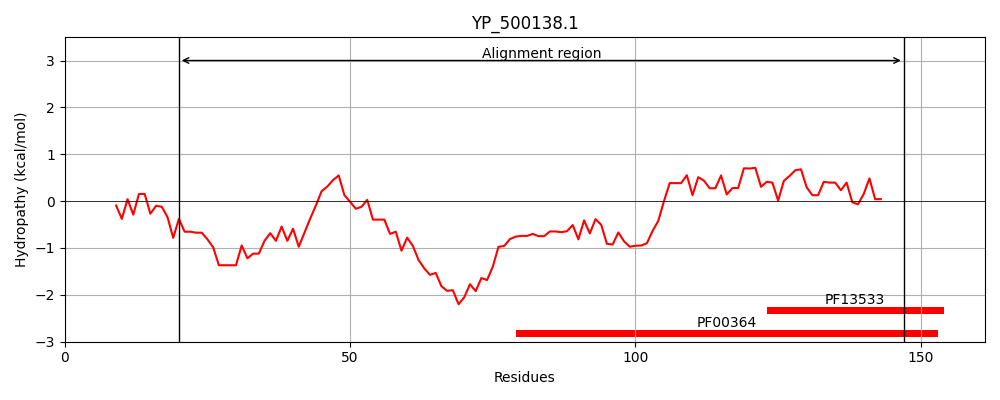
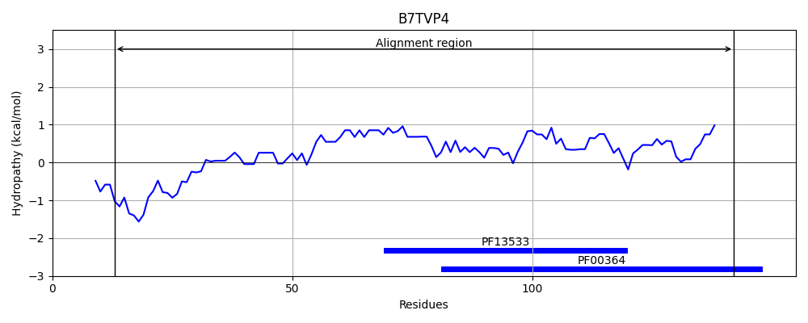
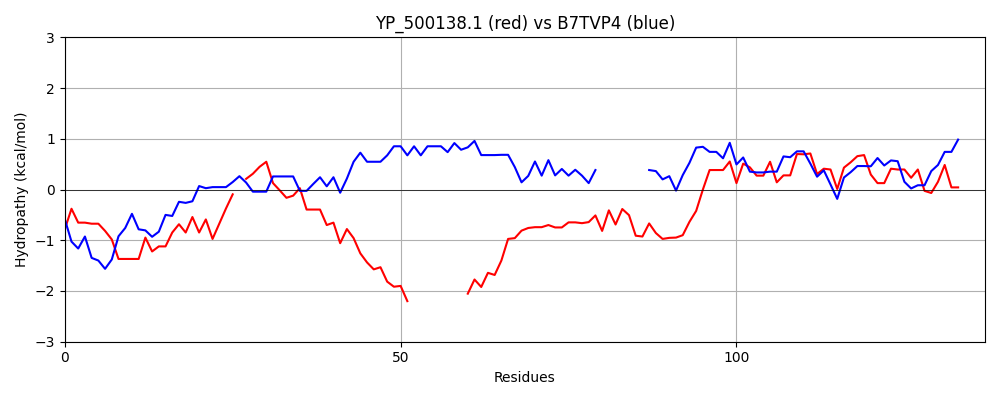

Hit Accession: B7TVP4
Hit TCID: 3.B.1.1.7
Hit Description: gnl|BL_ORD_ID|2048 gnl|TC-DB|B7TVP4|3.B.1.1.7 Biotin/lipoyl-binding protein OS=Clostridium symbiosum OX=1512 GN=gcdC1 PE=4 SV=1
Mach Len: 137
e:0.000000
Query TMS Count : 0
Hit TMS Count: 0
TMS-Overlap Score: 0.000000
Predicted Substrates:CHEBI:9175;sodium(1+)
BLAST Alignment:
| Protein Hydropathy Plots: | |
|---|---|
|  |  |
Pairwise Alignment-Hydropathy Plot: | |
|  | |